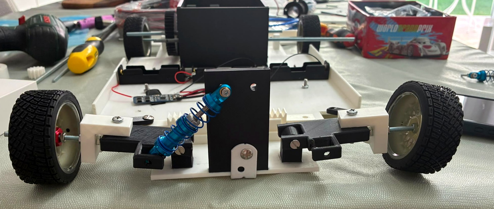

STEAM School · PremiosProyecto de Ingeniería · Curso 2025/26
Diseño y construcción de un vehículo automatizado a escala
Grado en Ingeniería en Sistemas Industriales — Teoría de Máquinas y Mecanismos · Automatismos y Control (M22)
Equipo TorqueLab: Amaya Sánchez · Héctor Sanz · Jorge González | Profesores: Juan Luis Carrasco y Javier Fernández
Objetivos académicos del proyecto
Diseñar y construir una maqueta funcional de vehículo a escala que integre de forma práctica la mecánica, la electrónica y la programación trabajadas en ambas asignaturas.
Aplicar el diseño mecánico: transmisión, dirección y suspensión.
Automatizar el comportamiento con sensores, actuadores y un controlador.
Lograr avance, retroceso, cambio de velocidad y giro controlados.
Integrar seguridad: detección de obstáculos y parada de emergencia.

Maqueta: chasis 3D · dirección Ackermann · suspensión · tracción por motor